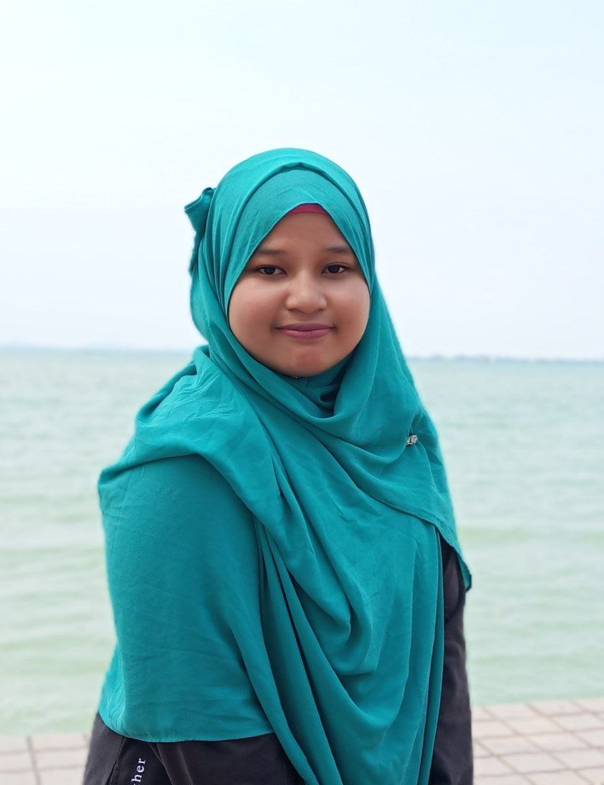

And I'm a Diploma in Library Management student
"If something toxic and it's only ever really been that, what you gonna do? Just move on, it's fine"
- Taylor Swift -
ASSALAMUALAIKUM W.B.T,
I am an Introvert girl and independent when doing works. I seldom seeking help from people as long I can find an alternative to solve something on my own. I love exploring something especially in History field. I also love travelling alone and with my parents. Besides chasing my career to be an information professional also known as a librarian, I am also focusing to be a novelist because i love reading and writing so much since i was 13 years old.
|  | |
| NAME | NUR ELYSKA YUNIZA BINTI HASNI |
| AGE | 20 YEARS OLD |
| RELIGION/RACE | ISLAM/MALAY |
| CITY/STATE | KUCHING/SARAWAK |
| PLACE OF BIRTH | TAIPING/PERAK |
| GENDER | GIRL |
There are 3 types of entertainment will be listed: